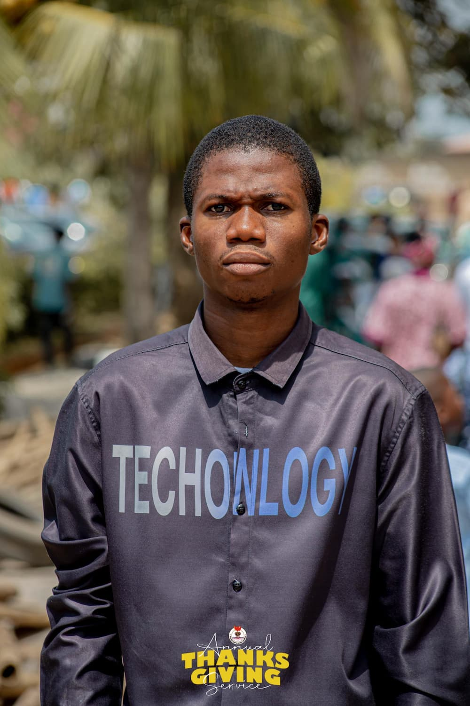

Oluwabori Stephen Olowookere | WDD 130

I am Olowookere Oluwabori Stephen, a passionate and growth-driven technology learner currently studying at Brigham Young University Worldwide advancing my foundational software deveopment skills. As a software developer in traini ng, I am committed to learning programming fundamentals, building projects, and understanding how technology can be applied to improve efficiency and solve real-world challenges. I am driven by curiosity, creativity, and a strong desire to contribute to innovations that support the world’s evolving tech landscape. I believe in teamwork, collaboration, and continuous self-development as key drivers of success. My goal is to grow into a highly skilled software developer who contributes to value-creating technological solutions while supporting strategic growth across industries. Guided by my Christian faith, I strive to uphold integrity, serve others, and pursue excellence. I am always eager to connect with professionals, mentors, and fellow learners to share insights, learn from diverse experiences, and explore opportunities in the tech ecosystem.